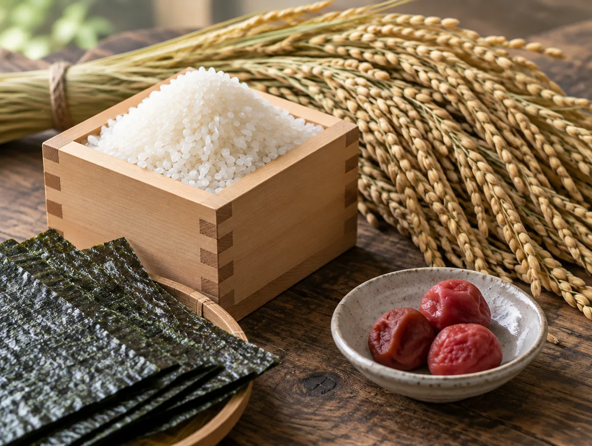
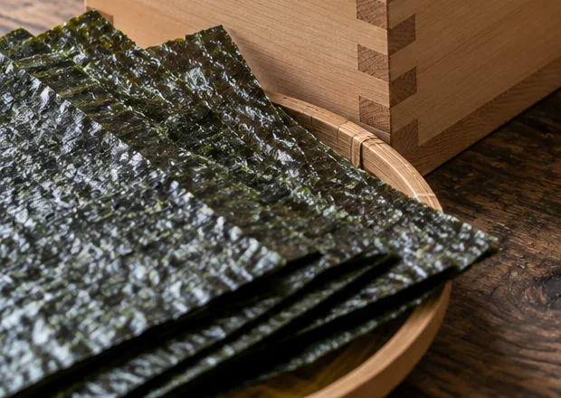
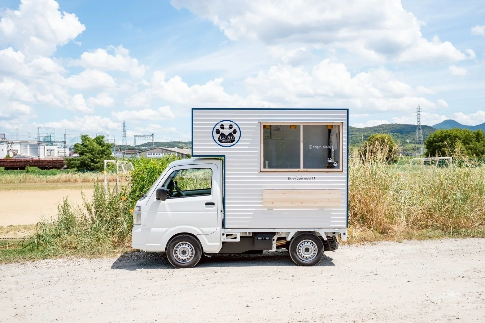
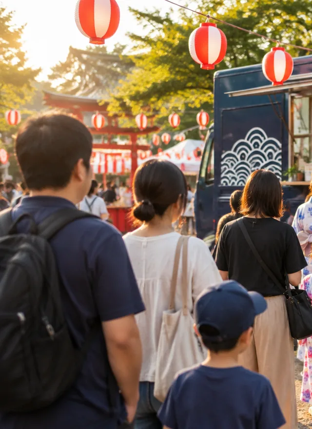
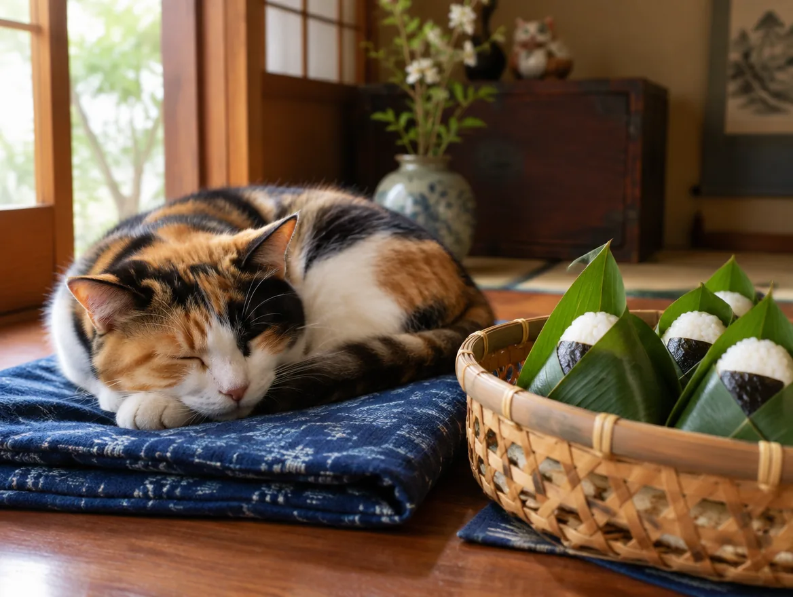
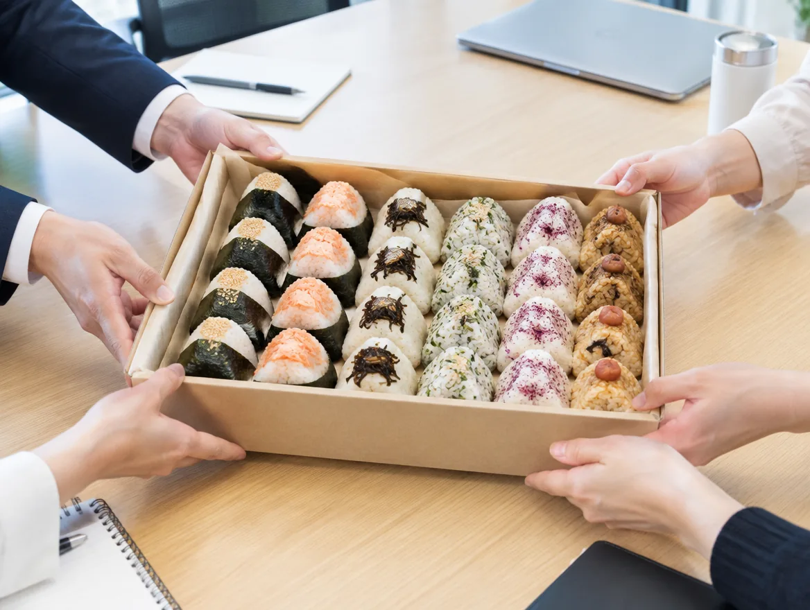

米 Rice
南魚沼産コシヒカリ。
「冷めてもおいしい」で知られる南魚沼のコシヒカリを、その日の分だけ炊きます。粒が立ち、噛むほどに甘い。握ったときにつぶれず、口の中でほどける硬さに炊き上げます。
だから NIKUKYU は、ご注文をいただいてから握ります。炊きたてのお米が手のひらの熱でほどよく落ち着き、海苔はパリッとしたまま。少しだけお待たせしますが、その数分が、いちばんおいしい状態でお渡しするための時間です。
お米は南魚沼産のコシヒカリ、海苔は三陸沖のもの。具材は定番に加えて、季節の期間限定も。「おにぎりって、こんなに違うんだ」と言っていただけるように、一個ずつ握っています。
こだわり
材料は三つしかないからこそ、どれも手を抜けません。四つめのこだわりは、握る順番と時間です。

米 Rice
「冷めてもおいしい」で知られる南魚沼のコシヒカリを、その日の分だけ炊きます。粒が立ち、噛むほどに甘い。握ったときにつぶれず、口の中でほどける硬さに炊き上げます。

海苔 Nori
香りの強い三陸沖の海苔を選び、袋から出すのはお渡しの直前。パリッとした歯ざわりと磯の香りが、炊きたてのお米と出会う瞬間を逃さないためです。

具 Fillings
定番の鮭、梅、ツナマヨに加えて、なす味噌のような季節の期間限定も。どれも真ん中にしっかり入れて、どこから食べても具にたどり着くように。断面を見れば、わかります。

手 Hands
作り置きはしません。温かいまま、海苔を巻いて、手渡しで。コンビニのおにぎりとはまったく別のもの、と思っていただけるはずです。

キッチンカー
全長 3.5m の小さなキッチンカーに、炊飯の道具と海苔と具材を積んで、大阪府内のイベント・マルシェ・オフィス街へ。窓の肉球マークを見かけたら、ぜひ声をかけてください。

出店について
店主のこと
ずっと製造業で働いてきました。飲食の経験は、ありませんでした。それでも「自分の手で作ったものを、目の前の人に食べてもらいたい」という気持ちが消えず、人生をかけてキッチンカーを買いました。
選んだのは、おにぎり。毎日の食べものだからこそ、お米と海苔でごまかしがきかない。だから、いちばんだと思うお米と海苔を選び、ご注文をいただいてから握る。工場で覚えた「決めたことを、毎日同じように守る」まじめさで、夫婦ふたり、一個ずつ向き合っています。


まとめ注文
20個から、前日までのご予約で承ります。少年野球や部活の朝、町内会、会議のお昼に合わせて、朝のお届けにも対応します。具材はおまかせでも、ご希望を組み合わせても。握ってから時間が経ってもおいしい南魚沼のコシヒカリだから、お昼の会議にも安心です。
ご予約・お問い合わせ
ご予約、出店のご依頼、まとめ注文のご相談は、すべて Instagram のダイレクトメッセージで受け付けています。右のフォームで文章を作ると、そのまま DM に貼り付けられます。
公式 LINE は準備中です。開設後は、出店予定の配信と予約の受付をこちらでも行います。